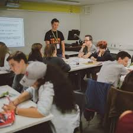
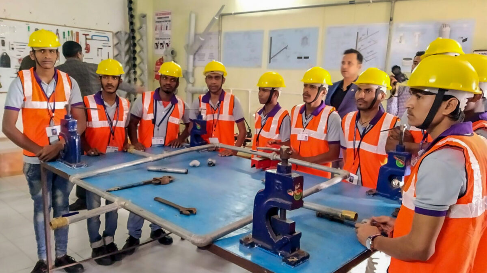

.jpg)

HOME ADMINISTRATION FACULTIES ACADEMICS RESEARCH STUDENT NEWS ABOUT US
ACADEMICS
At Kenyatta University, we are committed to providing a transformative educational experience grounded in academic excellence, innovation, and integrity. Our curriculum is thoughtfully designed to challenge students while equipping them with the knowledge and skills necessary to succeed in a complex, global society. Whether in the arts, sciences, business, or technology, every program is supported by a faculty of scholars and professionals dedicated to student development and success.

Our academic offerings include over 100 undergraduate majors, 60 graduate programs, and numerous professional certifications and continuing education courses. Students are encouraged to pursue interdisciplinary studies and engage in hands-on learning through labs, internships, and community-based projects. Our academic advising and support services ensure that students have access to the guidance and resources needed to reach their full potential.
Research is a vital part of our academic mission. Faculty and students work side-by-side on innovative projects that contribute to real-world solutions in areas such as sustainability, health sciences, data science, and social justice. Our partnerships with industries, government agencies, and global institutions expand the impact of our work and provide students with invaluable career and networking opportunities.